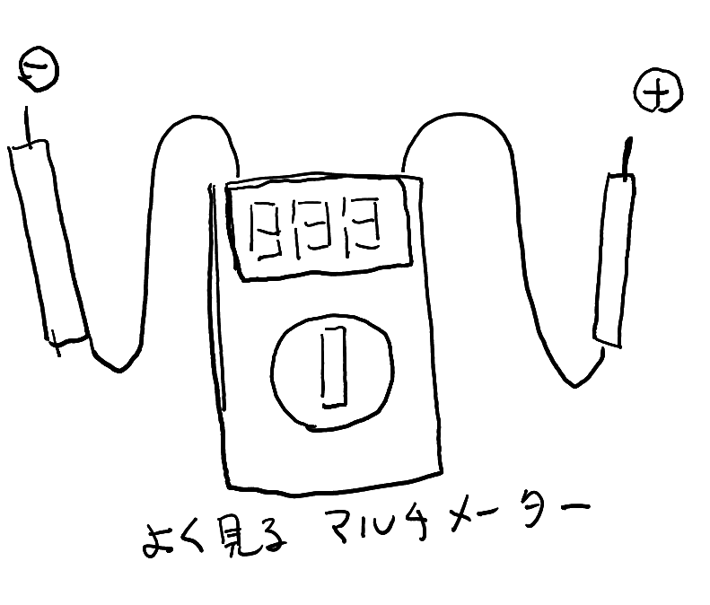
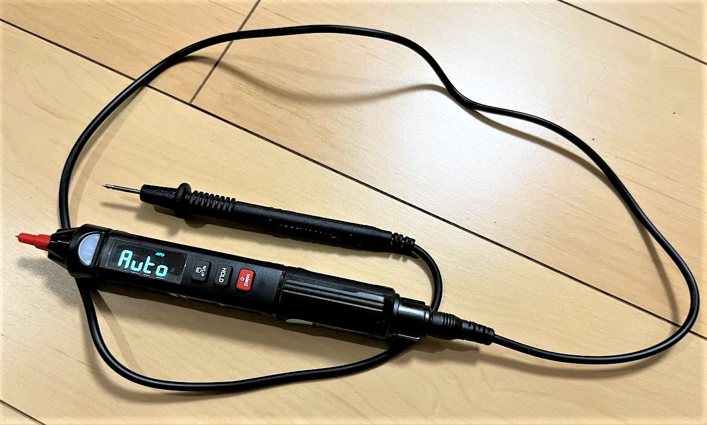
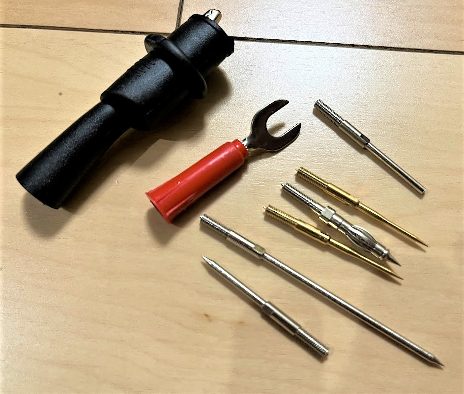

この記事はBanggoodの提供でお届けします。
以前紹介したようにこのブログはBanggoodと提携させていただいており、今回紹介するMUSTOOL A008 デジタルマルチメータはBanggoodからいただいたものとなります。 （MUSTOOL A008 デジタルマルチメータのレビューがしたい！と言ったのは自分なので、Banggoodが無理やりMUSTOOL A008 デジタルマルチメータを押しているわけではなく、inajobの一押しアイテム！、という感じです。）
・・・ といういつもの前置きはそこそこに、MUSTOOL A008 デジタルマルチメータについて紹介していきます。
そして、今回もこのブログのために2023/05/31まで利用できるクーポンを頂くことが出来たので、そちらも紹介します。
MUSTOOL A008 デジタルマルチメータ
電子工作のお供であるテスターですが、皆さんはどのようなものを使っていますか？
自分は今までオーソドックスなデジタル式のマルチメーターを使っていました。これはデジタル表示器と操作用のつまみがある本体から、赤と黒の2本のケーブルが伸びているというタイプのものです。

今回紹介するMUSTOOL A008 デジタルマルチメータは、ペンの形をしたマルチメーターです。一般的なマルチメーターで言うところの「本体」部分がプラス端子側のペン型の筐体に収められており、コンパクトで取り回しやすそうです。

できること
- 単4電池1本駆動
- 直流電圧の測定
- 交流電圧の測定
- 周波数の測定
- 抵抗の測定（ショートしているときは音がなる）
- コンデンサの容量測定
- 温度測定（華氏、摂氏）
- 手元LED
- 別の形状の測定用ピン
電流の測定機能は無いので、その点は注意が必要です 自分がよく使う機能は、直流電圧の測定と、抵抗の測定です。

まとめ
私のようなちょっとしたデジタルの電子工作をする人にとっては、コンパクトで必要十分なマルチメーターだと感じました。 一般的な形のマルチメーターと比べると、取り回しが簡単で扱いやすいと感じました。
電流の測定機能がないのだけが残念ですが、他の機能に関してはこれで十分だと感じました。
クーポンコード！
さて、ここまで紹介してきたMUSTOOL A008 デジタルマルチメータですが、今回Banggoodの提供という事で、$16.99で購入できるクーポンを頂いています。
コード： BG1c78e8
MUSTOOL A008 デジタルマルチメータをカートに入れ、チェックアウト後にこのクーポンコードを入力することで割引を受けることが出来ます。
有効期限は2023/05/31なので、買いたい方はお早めにどうぞ！（加えて、在庫に限りがあると思うのでお早目に！）


関連記事